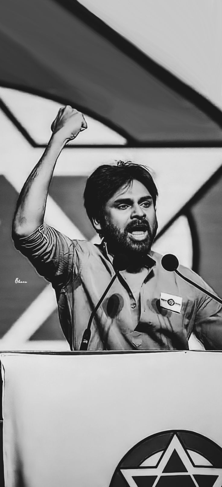

CARRER OBJECTIVE
Highly motivated and technically proficient Electronics And Communication Engineering graduate with a solid foundation in Java and SQL. Seeking to leverage academic knowledge in software development to contribute effectively to a dynamic team and drive innovation in the field of technology.
EDUCATION
| Level |
School/College |
CGPA |
- Bonam Venkata Chalamayya Engineering College Odalarevu 2020-2024 B.Tech in ECE – 8.2 CGPA
|
- Narayana Junior College Rajahmundry 2018-2020 Intermediate in MPC – 8.5 CGPA
|
- S S S V N School Chemudulanka 2018 Secondary Education – 10.0CGPA
|
TECHNICAL SKILLS
- Languages : Java ,Python
- FrontEnd : Html, CSS
- Database : SQL
- Good Communication skills
HOBBIES
- Playing cricket
- Travelling
ACHIEVEMENTS
- Participated in Volleyball conducted by school.
- Led Cricket team to won the Finals as a Captain in 10th Standard
- Bagged 1st prize in Technical Quiz and Poster Presentation conducted on Engineer’s Day.
- 
STRENGTHS
- Adaptability to new environment
- Time Management
- Self motivated
CERTIFICATIONS
- C, Java, Data Structures course completion certificates from Code Tantra
- Certified in SQL from LINKEDIN
- Certified in cloud computing as Computer System Administrator From SERVICENOW
- Certified in Communication Skills by TCS ION
- HTML,CSS, Python certifications from Infosys Springboard
- Python for Data Science from Infosys Springboard
PROJECTS
- EMBEDDED SYSTEMS BASED ON RESTAURANT AUTOMATION:----
- As embedded systems continue to advance, the future prospects are promising. The integration of AI and IoT will revolutionize the restaurant industry, enhancing efficiency and customer experience.
Role : Team Leader
Team size : 4
- PORTFOLIO :----
- Modeling a student resume portfolio site using HTML, CSS, Javascript.
- MACHINE LEARNING :----
- Restaurant Reviews using NLP and CNN and Sentiment Analysis
INTERNSHIPS
- Completed internship program on MERGING TECHNOLOGIES (ARC) from APPSDC.
- Completed internship program on MACHINE LEARNING from 1STOP.
- Completed internship program on Java Full Stack from KODNEST.
DESCRIPTION
- I hereby declare that all the above- mentioned information furnished by me is true and correct to the best of my knowledge.